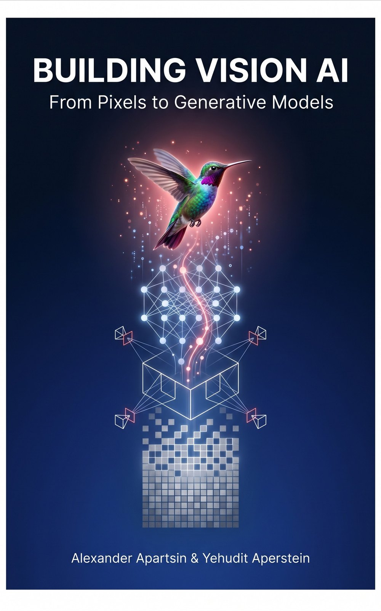

A practitioner's guide to image processing, classical computer vision, deep learning, and generative vision models.
This book takes you from your first NumPy pixel manipulation to fine-tuning diffusion models, told as one connected story. You build every core idea from scratch, then learn the few lines of library code that professionals actually ship. By the end you can design, train, evaluate, and deploy complete vision systems: classical and learned, discriminative and generative.
Each part stands on the one before it; together they span sixty years of vision in one continuous build.
The signal-processing bedrock: pixels, color, histograms, convolution, the frequency domain, geometric warping, morphology, and restoration. The operations every vision system stands on.
9 chapters · 49 sections IIVision before learning: edges and keypoints, matching and RANSAC, camera models, stereo and structure from motion, optical flow, and the hand-crafted recognition pipelines that defined an era.
9 chapters · 48 sections IIIVision learned end to end: PyTorch foundations, CNNs and vision transformers, detection and segmentation, self-supervision and foundation models, video, 3D, and deployment to real hardware.
12 chapters · 67 sections IVModels that create: VAEs, GANs, and diffusion; text-to-image systems and controllable editing; video, 3D, and world generation; plus the evaluation, safety, and synthetic-data practice that makes them useful.
9 chapters · 55 sectionsFive habits, kept in every chapter from the first pixel to the last sample.
Every chapter builds complete, runnable systems (a document scanner, a lane detector, a CIFAR-10 classifier end to end), never isolated snippets.
After each from-scratch build, a shortcut callout shows the same task in a few lines of OpenCV, scikit-image, PyTorch, or diffusers, and names exactly what the library handles for you.
Pitfalls, math asides, practical industry examples, and cross-references are typeset as distinct boxes, so you can read deep or skim fast and never miss a trap.
Each chapter closes with hands-on exercises that extend its worked pipelines, from quick checks to small projects you can put in a portfolio.
Convolution becomes the CNN layer, denoising becomes diffusion, inpainting becomes generative editing, and multi-view geometry returns in NeRF. One story, told twice.